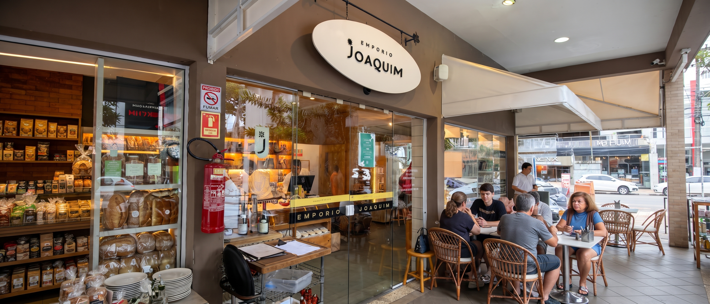

Empório Joaquim
O Empório Joaquim começou sua história em 2019, na Praia do Canto, como uma padaria artesanal e delicatessen.
A proposta inicial reunia pães, produtos selecionados e itens gastronômicos especiais. Poucos meses depois, o negócio ampliou sua atuação e incorporou um bistrô.
O crescimento continuou. Em 2024, a marca abriu uma segunda unidade, a Joaquim Bakery & Café, também na Praia do Canto, com uma proposta que reúne padaria artesanal, cafés, refeições, confeitaria e bar.
Hoje, o Empório apresenta mais de 60 tipos de pães de fermentação lenta, além de croissants, bolos, tortas, doces e produtos de delicatessen, o lugar perfeito para uma, duas, três... taças de espumante com as melhores amigas, com o horário muito favorável para passar um dia inteiro ou agilizar a rotina, mas comendo sabor com qualidade.
O bistrô também apresenta uma proposta própria, com referências de Nova York e da cozinha mediterrânea.
É interessante observar como um negócio que começou com uma proposta de padaria e empório foi ampliando sua atuação para atender diferentes momentos do dia: café da manhã, almoço, encontro, happy hour e encomendas.
Localização das Unidades:
UN1 Empório Joaquim - Rua Elesbão Linhares, 15, Praia do Canto
UN2 Joaquim Café & Bar - Rua Joaquim Lírio, 455, Praia do Canto
Horário:
Segunda a quarta, 09h às 20h
Quinta e sexta, 09h às 22h
Sábado, 08h às 20h
Domingo, 08h às 15h30
Telefone: (27) 99612-3979 | (27) 99299-3717
Instagram: @emporiojoaquim
Site oficial: Acessar Site